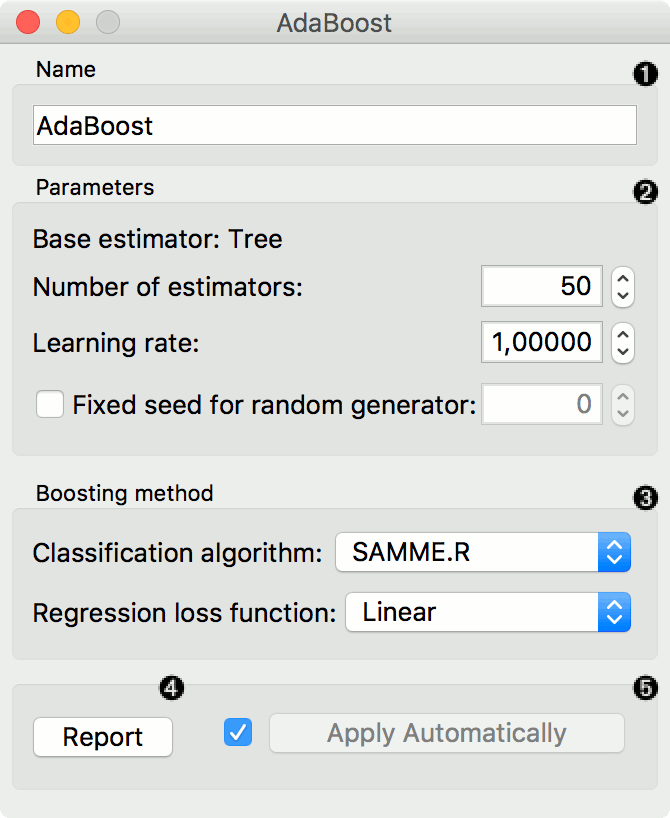
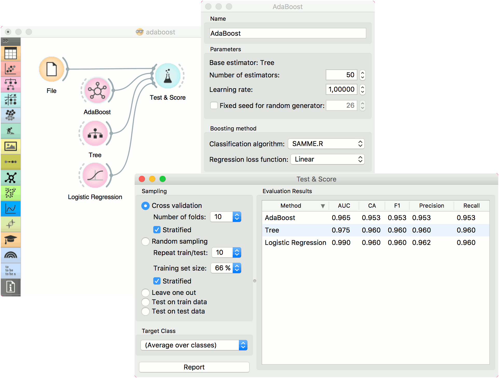
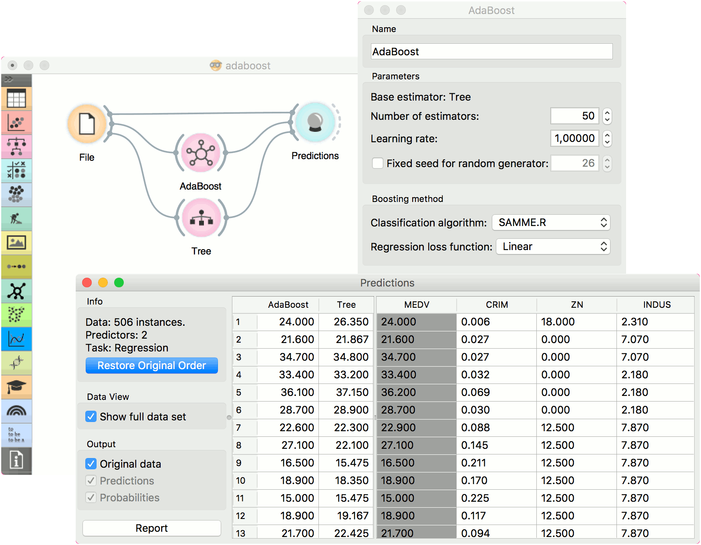

AdaBoost
An ensemble meta-algorithm that combines weak learners and adapts to the ‘hardness’ of each training sample.
Inputs
- Data: input dataset
- Preprocessor: preprocessing method(s)
- Learner: learning algorithm
Outputs
- Learner: AdaBoost learning algorithm
- Model: trained model
The AdaBoost (short for “Adaptive boosting”) widget is a machine-learning algorithm, formulated by Yoav Freund and Robert Schapire. It can be used with other learning algorithms to boost their performance. It does so by tweaking the weak learners.
AdaBoost works for both classification and regression.

- The learner can be given a name under which it will appear in other widgets. The default name is “AdaBoost”.
- Set the parameters. The base estimator is a tree and you can set:
- Number of estimators
- Learning rate: it determines to what extent the newly acquired information will override the old information (0 = the agent will not learn anything, 1 = the agent considers only the most recent information)
- Fixed seed for random generator: set a fixed seed to enable reproducing the results.
- Boosting method.
- Classification algorithm (if classification on input): SAMME (updates base estimator’s weights with classification results) or SAMME.R (updates base estimator’s weight with probability estimates).
- Regression loss function (if regression on input): Linear (), Square (), Exponential ().
- Produce a report.
- Click Apply after changing the settings. That will put the new learner in the output and, if the training examples are given, construct a new model and output it as well. To communicate changes automatically tick Apply Automatically.
Preprocessing
AdaBoost uses default preprocessing when no other preprocessors are given. It executes them in the following order:
- removes instances with unknown target values
- continuizes categorical variables (with one-hot-encoding)
- removes empty columns
- imputes missing values with mean values
To remove default preprocessing, connect an empty Preprocess widget to the learner.
Examples
For classification, we loaded the iris dataset. We used AdaBoost, Tree and Logistic Regression and evaluated the models’ performance in Test & Score.

For regression, we loaded the housing dataset, sent the data instances to two different models (AdaBoost and Tree) and output them to the Predictions widget.
